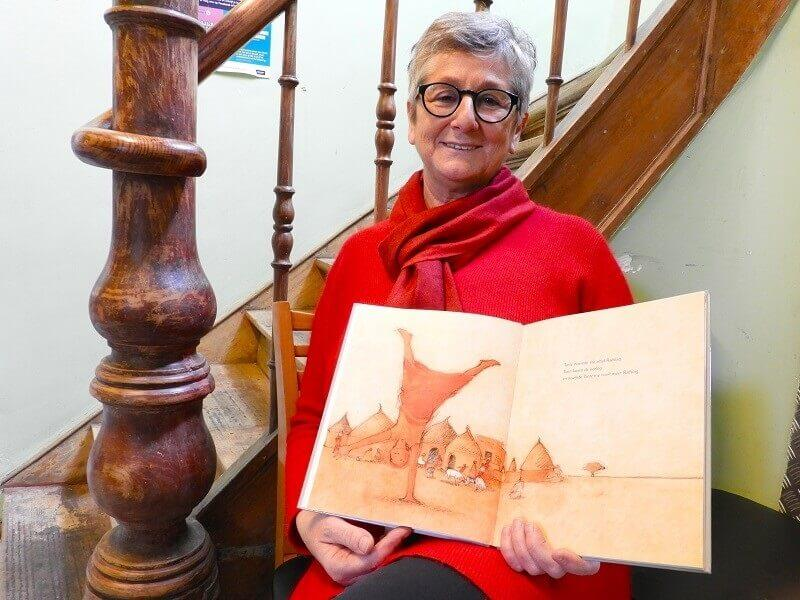
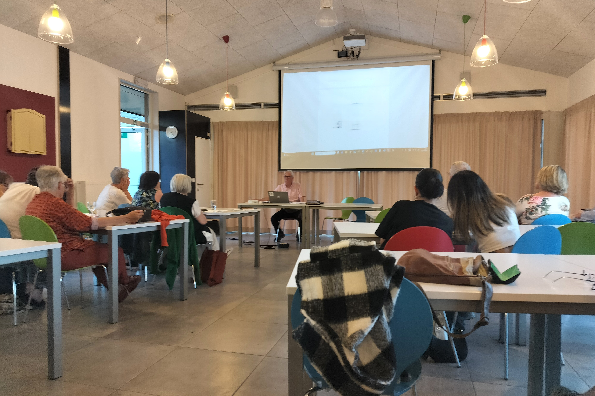

Benieuwd hoe het er binnen in VLOS uitziet? Wil je graag meer te weten komen over vluchtelingen en mensen in precair verblijf? Nieuwsgierig hoe het dagdagelijkse reilen en zeilen eraan toe gaat in VLOS?
Kom binnen voor een rondleiding!
We hebben een specifiek aanbod voor scholen, aangepast aan de leeftijd en de groep, maar ook andere organisaties of particulieren zijn altijd welkom. Voor meer informatie, neem contact op met Linda, linda@vlos.be of Dirk, dirk@vlos.be.
Als u een inzamelactie organiseert binnen uw school is dat voor ons meer dan welkom.
Middelbare school
Wat kun je verwachten:
Programma voor 1 lesuur:
- Een intens beeldverhaal over de weg die vluchtelingen moeten afleggen.
- De asielprocedure in beeld gebracht.
- Rondleiding in de VLOS-kruidenier.
Extra aanbod voor 2 lesuren:
- Test je kennis over vluchtelingen via een stellingenspel.
- Beeldfragmenten met getuigenissen van vluchtelingen.
- Rondleiding VLOS-bazar.
Deze uiteenzetting sluit perfect aan bij de te bereiken eindtermen rond burgerschapscompetenties. (7.01 tot 7.04)

Lagere school
Wat kun je verwachten:
2 lesuren, in VLOS Kasteelstraat 4
- “een koffer vol…” HERINNERINGEN
- “een koffer vol….” HOOP
- “een koffer vol….” DROMEN
Is Youssef vanuit Afghanistan naar ons land gekomen.
Maar…. Mag hij hier blijven wonen?

Kleuters
Voor kleuters bieden wij de inleefactiviteit " Mijn knuffeldeken" aan. Deze kan je zelf eenvoudig in je klas geven.
Het verhaal volgt Naömi, een vluchtelingenkind dat haar weg zoekt in een nieuwe omgeving en leert omgaan met een andere taal en nieuwe gewoonten. Zo ontdekken kleuters op een speelse en warme manier wat het betekent om nieuw te zijn en hoe ze elkaar daarbij kunnen helpen.
Meer info: linda@vlos.be

Organisaties/particulieren
Nieuwsgierig naar wat er hier zich binnen allemaal afspeelt? Meer weten over onze werking, maar ook de weg die vluchtelingen afleggen, en het leven van mensen in precair verblijf in België? Wij bieden uitleg en rondleidingen op maat.